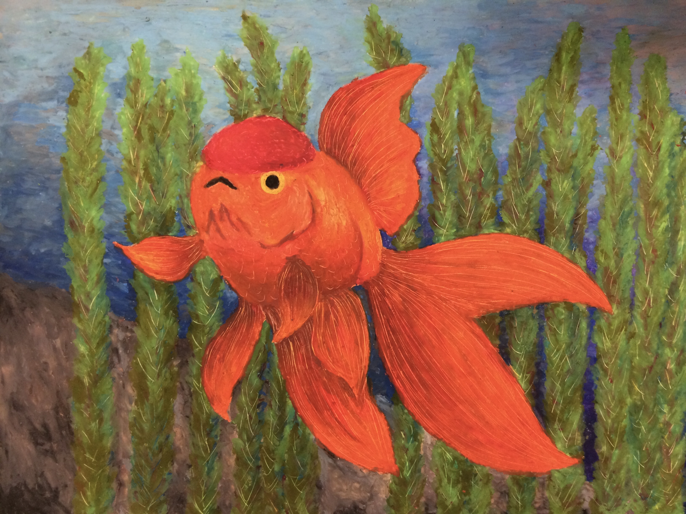
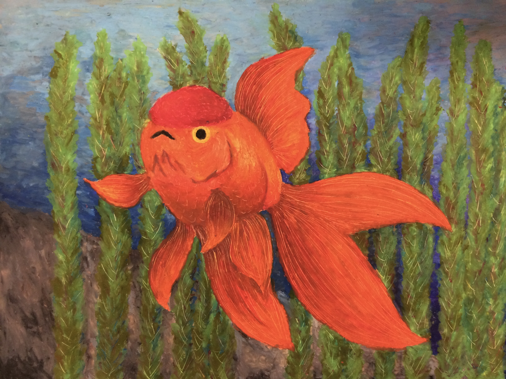

home
I partially wanted a website so I could store old pieces I worked on in the past. I love working with mexed media. Hopefully, seeing all this old (crappy) stuff I've done will encourage me to make new (less crappy) pieces.


 
